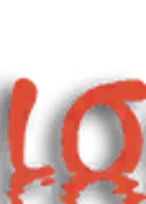

ASTROLABE
Tous les jeux
← Reverse: 1999
Narcissus

Jeu
Reverse: 1999
Rareté
5★
Élément / type
unk
Tier
SS
Arcaniste 5★ d’affinité Arcaniste, classé S dans la tier list actuelle.
Voir la fiche complète dans le guide →
Même élément / type
Hedone
Rhiannon
Everecho
Kanania
Ms Stranger
Black Dwarf
Coppelia
Silverwing Eagle